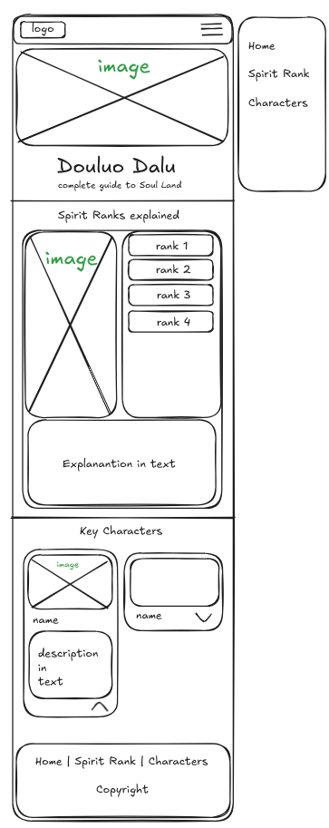
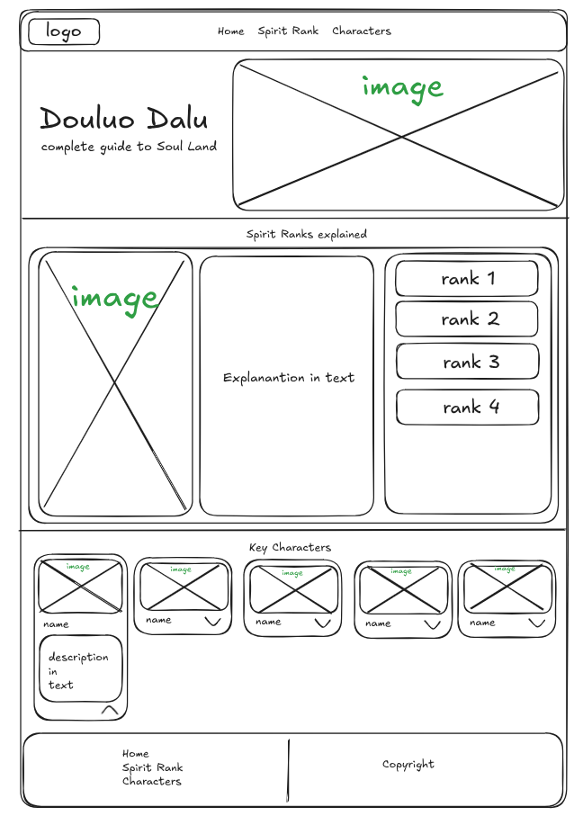

Site Name
Douluo Dalu Wiki
I chose this name because it clearly identifies the subject matter. "Douluo Dalu" is the series title, and "Wiki" implies an informational database.
Site Purpose
The site provides a guide to the "Douluo Dalu" world, detailing Spirit Ranks and introducing key characters.
Scenarios
- "I'm confused about the difference between a Spirit Master and a Titled Douluo. Where can I find a rank explanation?"
- "What are the specific Spirit Abilities of Tang San?"
Color Schema
Primary: Blue (#1E3A8A) - Used for Headings
Secondary: Gold (#F59E0B) - Used for Accents
Accent: Silver (#D1D5DB) - Used for Backgrounds
Primary
Secondary
Accent
Typography
Headings: Cinzel (Serif)
Body: Roboto (Sans-serif)
Wireframes
Mobile View

Desktop View
